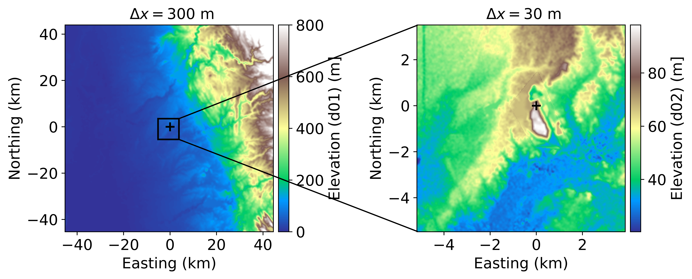
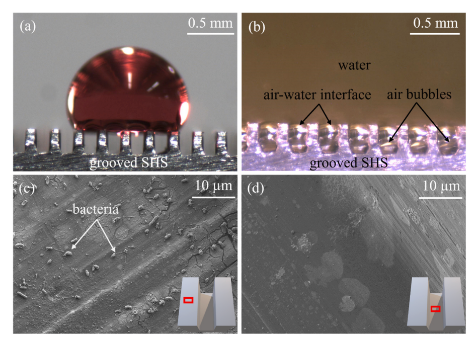
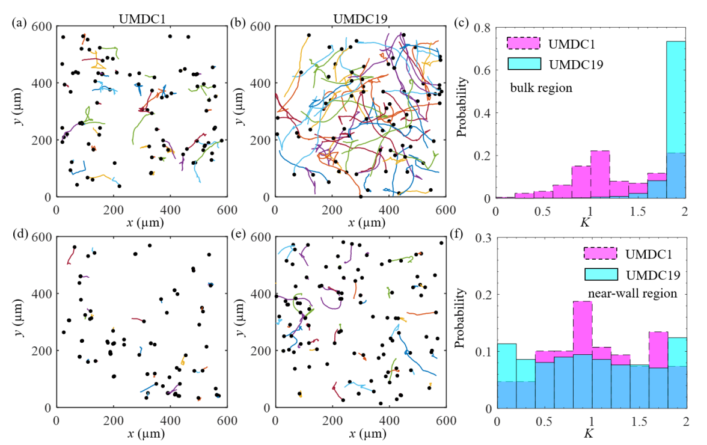
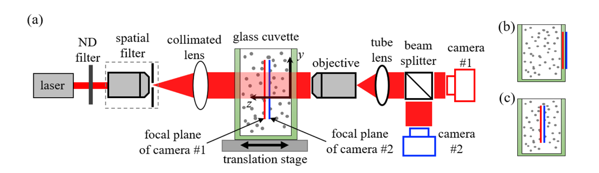

About Me
I am a fourth-year PhD candidate in Civil and Environmental Engineering at the University of California, Berkeley, working in the Atmospheric Modeling Group with Prof. Fotini Katopodes Chow. My doctoral research develops physics-based approaches for continuous monitoring of methane emissions from municipal solid waste landfills. I build high-resolution digital twins of landfills using large-eddy simulation in WRF-Chem with wind-driven surface fluxes, and use them to design fenceline sensor networks and to test Bayesian inversion methods that turn sensor concentrations into zone-resolved emission estimates with quantified uncertainty. I also use these digital twins to evaluate drone-based methane flux measurements, assessing how flight patterns and atmospheric conditions affect the accuracy of whole-site emission estimates. This work is supported by an EPA STAR grant and an EREF PhD Scholarship, and aims to help landfill operators and regulators move from detecting methane leaks to locating and quantifying them.
Prior to pursuing my PhD, I earned a master’s degree in Mechanical Engineering from the University of Massachusetts Dartmouth in 2023. My master’s research centered on marine biofouling, where I investigated the performance and durability of superhydrophobic surfaces in marine environments. I completed my bachelor’s degree in Mechanical Engineering at Bangladesh University of Engineering and Technology (BUET) in 2019, with a research focus on computational fluid mechanics, particularly supersonic jet flows. From my early academic training to my current doctoral work, my research path reflects a growing commitment to applying engineering tools to address pressing environmental challenges and to advancing sustainable climate solutions.Research Interests
- Atmospheric Dispersion Modeling: WRF-Chem LES; FastEddy and ERF (GPU-accelerated Scientific Computing)
- Methane Emissions: Landfill CH₄ Dispersion, Fenceline Senesor Network, Source Characterization, Bayesian Inverse Modeling, Drone Flux Measurement
- Machine Learning: Supervised and Unsupervised learning; Deep Learning (CNN, LSTM, PINN; TensorFlow); Genetic Algorithms
- Data Analysis & Geospatial Tools: Python (NumPy, netCDF4, wrf-python, Matplotlib); MATLAB; Fortran; Bash; Git/GitHub; LaTeX,
- Geospatial & HPC: QGIS; Savio HPC Cluster (Slurm Job Scheduling and Workflow Management)
- CFD, FEA & CAD: ANSYS Fluent; COMSOL Multiphysics; SolidWorks (3D CAD and Simulation)
News
- [Octobor 2026] Abstract accepted for AGU 2026! I will present my poster, "Quantifying Methane Emissions at Landfills Using Bayesian Source Inversion and Fixed-Point Sensor Data," in San Francisco.
- [September 2026] Submitted my first PhD paper, "Performance Evaluation and Optimization of Fenceline and Community-Scale Sensor Networks for Continuous Emission Monitoring at Municipal Solid Waste Landfills," to Waste Management. It is currently under review.
- [August 2026] Passed my Ph.D. Qualifying Examination and advanced to Ph.D. candidacy in Civil and Environmental Engineering!
- [June 2026] Renewed my EREF Scholarship for 2026 to support high-resolution atmospheric modeling (WRF-Chem) of landfill methane emissions.
- [February 22–25, 2026] Presented my research, "Performance Evaluation of Fixed-Point Continuous Methane Monitoring Networks at Municipal Solid Waste Landfills," at the Global Waste Management Symposium (GWMS) in Indian Wells, California.
- [September 2025] Awarded the 2025 EREF Scholarship to support high-resolution atmospheric modeling (WRF-Chem) of landfill methane emissions.
- [May 2025] Passed my Ph.D. Preliminary Examination.
- [August 2023] Earned my M.S. in Mechanical Engineering from the University of Massachusetts Dartmouth.
Peer-Reviewed Publications

Performance evaluation and optimization of fenceline and community-scale sensor networks for continuous emission monitoring at municipal solid waste landfills
M. Elius, K. Yang, H. Gamarro, M. Delkash, R. Yazdani, P. Imhoff, F. K. Chow
Waste Management, under review, 2026

Impact of gas bubbles on bacterial adhesion on super-hydrophobic surfaces
M. Elius, S. Richard, K. Boyle, W.S. Chang, P. H. Moisander, H. Ling
Results in Surfaces and Interfaces vol. 15, 100211, 2024

Comparison of 3D motion of bacteria with and without wall accumulation
M. Elius, K. Boyle, W.S. Chang, P. H. Moisander, H. Ling
Physical Review E 108 (1): 014409, 2023

Effect of hologram plane position on particle tracking using digital holographic microscopy
M. Elius and Hangjian Ling
Applied Optics, vol. 61, pp. 9415-9422, 2022